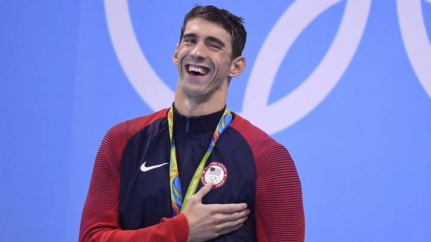
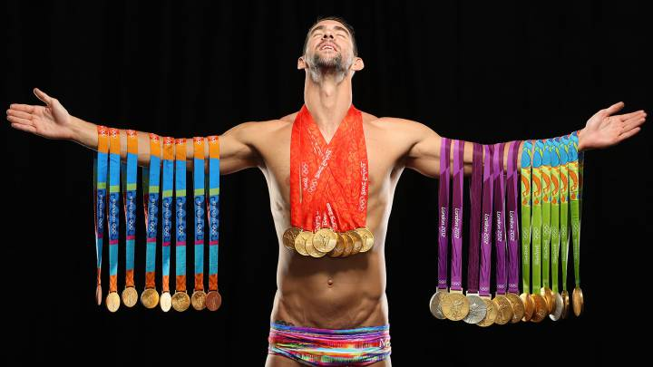
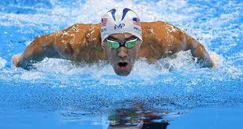
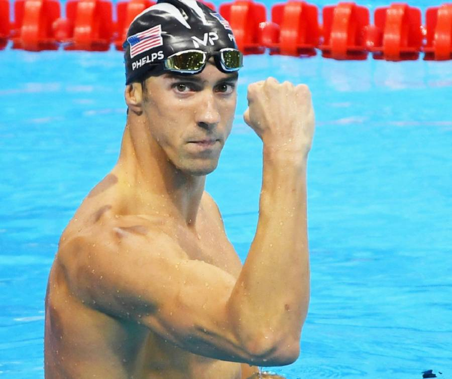

|
|||
| Inicio | Biografía | Logros | Contacto |
Michael Phelps |
|||
|  | |||
| Michael Fred Phelps II es un exnadador olímpico estadounidense y el deportista olímpico más condecorado de todos los tiempos, con un total de 28 medallas. Phelps también posee los récords de más medallas olímpicas de oro, más medallas de oro en eventos individuales y más medallas olímpicas en eventos masculinos. | |||
|  |  |  | |
| © Derechos Reservados a Micaela Gallegos Goncalves 2022 | |||